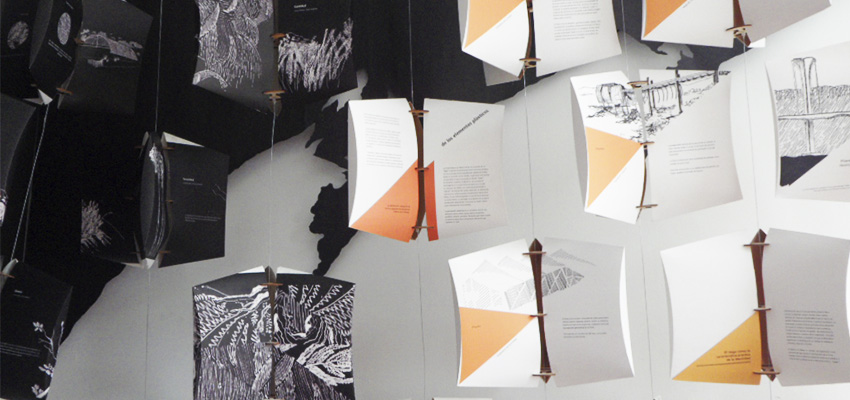

Sistema de informació vecinal para el sector incendiado del Cerro La Merced.
Sobre el Proyecto:
Sistema de información vecinal a modo de señaletica, implementados en las calles del Cerro La Merced en Valparaíso, luego del incendio ocurrido en el lugar en Abril del 2014. Realizado en base a matrices recicladas de offset e impresión serigrafica. A ello se le implementa un tipo de mapa mosaico impreso en autoadhesivos de colores.
Año de Realización:
2014
ABSTRACCIÓN RAZONADA

Tipo de Proyecto:
Exposición Teselar- Manto Gráfico.
Objetivo del Proyecto:
Sistema de unidades discretas conformado por teselas de tres caras que construyen un manto visual por medio del discurso gráfico personal.
Sobre el Proyecto:
Discurso y reflexión personal sobre la utilización de los elementos plásticos y lógicos en una composición gráfica, haciendo referencia al planteamiento ideal de la experiencia hacia el mundo de la composición. En este ideal se distinguen tres tiempos: los elementos visuales que componen un total, el ritmo intero de los elementos y la identidad propia de la forma.
Año de Realización:
2015
OMEGA CUBIX
Tipo de Proyecto:
Control interactivo digital (programación de hardware y software)
Objetivo del Proyecto:
Planteamiento de espacio abstracto manipulable desde el estudio pictorico de Piet Mondrian. Propuesta de tres dimensiones alterables en una escala medible por medio de la relación forma-gesto (Interfaz Tangible de Usuario).
Sobre el Proyecto:
De acuerdo a los planteamientos artisticos de Piet Mondrian, se diseñan tres dimensiones pictoricas:Traslación del color (rotación de los cuatro colores en el total del cuadro), Traslación del eje ( trasladación de la intersección de las líneas en virtud del grosor mayor y menor de las líneas existentes dentro del cuadro) y Longuitud (variación de extensión del trazo, en donde la línea puede llegar a desaparecer o alargarse hasta el borde opuesto del cuadro).
Año de Realización:
2016
EJE HELICOIDAL
Tipo de Proyecto:
Cuerpo cinético programable (programación de hardware y software).
Objetivo del Proyecto:
Construcción del "hacer aparecer" por medio del pliegue-
despliegue del objeto, en la transformación autónoma de su forma.
Sobre el Proyecto:
Objeto de tres tiempos en base a su capacidad de torsión en torno a un eje central. La repetición de su unidad discreta construye una estructura visual contenida, oculta en su forma.
Su estado contenido permite abarcar una extensión vertical de su interior, desvelando la aparición de elementos unificadores de un vacío óptico-modular.
Los tres tiempos del objeto se desvelan a medida que la interacción entre persona-objeto sea alcanzable en una distancia prudente para generar lo interactivo del objeto (sensor de proximidad).